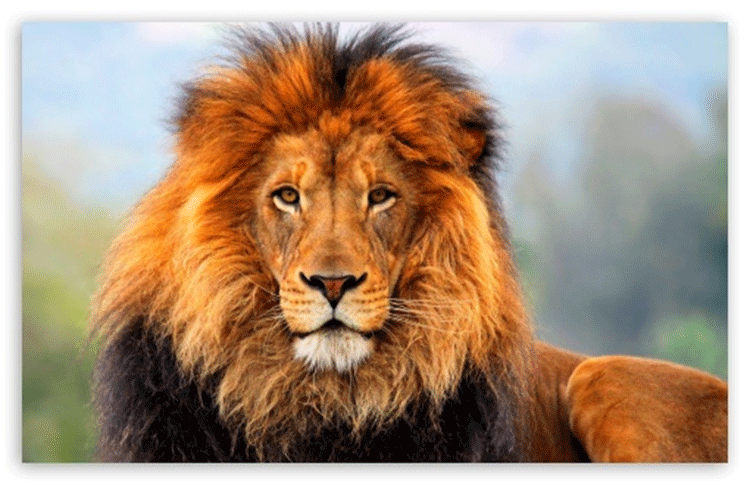

Lion
The Lion is one of five big cats and there are commonly described as the African lion as several subspecies were found in Africa. The Lion is the largest living cat after the tiger and males often exceed 259 kg (550 lb) in weight. The Lion usually lives for 10 – 14 years in the wild, where as if there were in captivity they could live more than 20 years [3]. The most popular characteristic of the Lion is its mane.